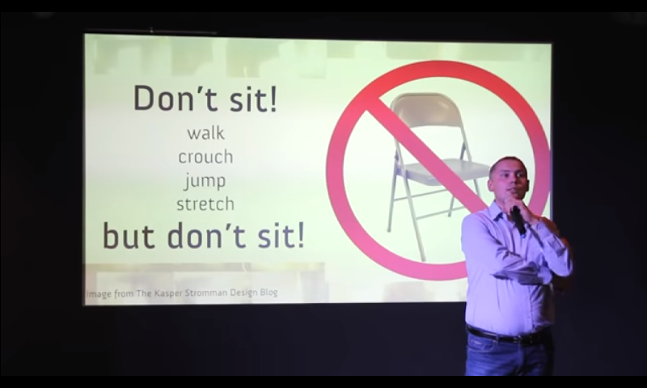

Before we define what design thinking is, let us observe how design thinking is observed.
A YouTube channel called NNGroup conducted a study on the perception of how UX professionals view design thinking (Gibbons, 2019). From their findings, there is an observed commonality in the participant’s responses. Characteristic-like traits are attributed to design thinking. The researchers inferred that such an association is due to tangibility, consistency, and popularity.
Tangibility refers to how abstract concepts are actuated into the physical realm. Much like Nodder’s definition of user design, wherein developers need to translate solutions to pain points into a system the machine understands (Nodder, 2017).
Consistency is the relevance of the problem; if companies aim to tackle the same hurdles in product development. The persistence of the problem prompts innovation, thus the demand for design thinking
Popularity refers to the universal understanding of design features- like a floppy disk logo can mean "save file" or how swiping up and down on a smartphone enables scrolling. Common features are implemented because it is easily understandable, and majority of people agreed that certain ways of navigation are the standard.
Gibbons and NNGroup also asked participants to define design thinking (Gibbons, 2019). According to their research, professionals' responses were in-line with three mental models: design thinking as a strict process, design thinking as a mindset, and design thinking as a toolkit.
Design thinking as a strict process refers to how designers aim to meet a goal, which is usually solving problems their clients have. Design thinking as a mindset is how we change our own perception and logic; to think outside the box and innovate. Design thinking as a toolkit refers to the ability to actuate solutions that people will use. It instills curiosity- taking apart a problem to see the underlying traits hindering the designers and end users.
Courtney best summarized the definition of design thinking using the mental models: "Design thinking is a philosophy and a set of tools to help you solve problems in a creative way" (Courtney, 2020).
Interaction Design Foundation further solidifies their definitions, as they view design thinking as "a non-linear, iterative process that teams use to understand users, challenge assumptions, redefine problems and create innovative solutions to prototype and test. Involving five phases—Empathize, Define, Ideate, Prototype and Test—it is most useful to tackle problems that are ill-defined or unknown" (Interaction Design Foundation, n.d.).
Courtney, Gibbons, and Interaction Design Foundation did define design thinking as a process, but it is very flexible. That is why the process is utilized by many fields, not just in user design. The five phases of the design thinking process is only a map to guide the development of solutions (Courtney, 2020). The steps are not concrete procedures and are freeform, enabling creativity and instilling innovation.
The Design Thinking Process has been overstated in both our lesson and the sources. We now have a better idea of what design thinking is, now let us enhance our problem solving and creative skills. This section enlists unique creative pointers from a Pawel Zebrowski.
Zebrowski conducted a TedTalk last 2016 entitled "Design thinking – what, how, why, when?" He shares valuable insight about the design process, plus tips on how to effectively iterate the steps.
In the ideation phase, he says a team does not only design a product, but also a user experience. Products are constantly being updated to cope with the current situation- the economical, demographical, social, ecological aspects of the consumer landscape. Zebrowski enumerates two steps in the ideation phase that must done: visualize and move around.
Visualize the product through drawings and prototypes, not through descriptions or conversation. While brainstorming, move around. "Do anything else- walk, crouch, jump, stretch, but do not sit." Zebrowski states that moving around triggers more blood flow and sends more energy to the brain. It encourages productivity and creativity.
In the prototyping phase, Zebrowski says "If the user does not understand it there is a mistake." Quite justifiable, as the users are the ones who are going to use the product, not the designers. Since the problem the designers aim to solve is not their own, there are factors that can be overlooked.
Overall, Zebrowski offers this piece of advice about what Design Thinking needs: "We need to be more open. Talk to the people that are in the environment and share the knowledge. We need to believe that a paper prototype can give us how our market looks like. And we need to be more curious about the innovation in our market."
[1] Courtney, J.(2020, 4 February). What Is Design Thinking? An Overview (2020). Retrieved from
https://www.youtube.com/watch?v=gHGN6hs2gZY
[2] Gibbons, S. and NN Group(2019, 31 August). How UX Professionals Define Design Thinking in Practice.
Retrieved from https://www.youtube.com/watch?v=crYhss_k8w4
[3] Interaction Design Foundation(n.d.). Design Thinking. Retrieved from https://www.interactiondesign.org/literature/topics/design-thinking
[4] Nodder, C.(2017, February 17). UX Design: 1 Overview. Retrieved from
https://www.linkedin.com/learning/ux-design-1-overview-2
[5] Żebrowski, P.(2016, 25 March). Design thinking – what, how, why, when? | Paweł Żebrowski |
TEDxSzczecinLive. Retrieved from https://www.youtube.com/watch?v=Q80wUnju5YA
https://www.braineet.com/blog/design-thinking-innovation/
This website was developed as a major requirement for User Interface and User Experience Design and Programming (USERDES). This website falls under the protection of Creative Commons. If you wish to use the original content in this website for your own purposes, credit the website developer.